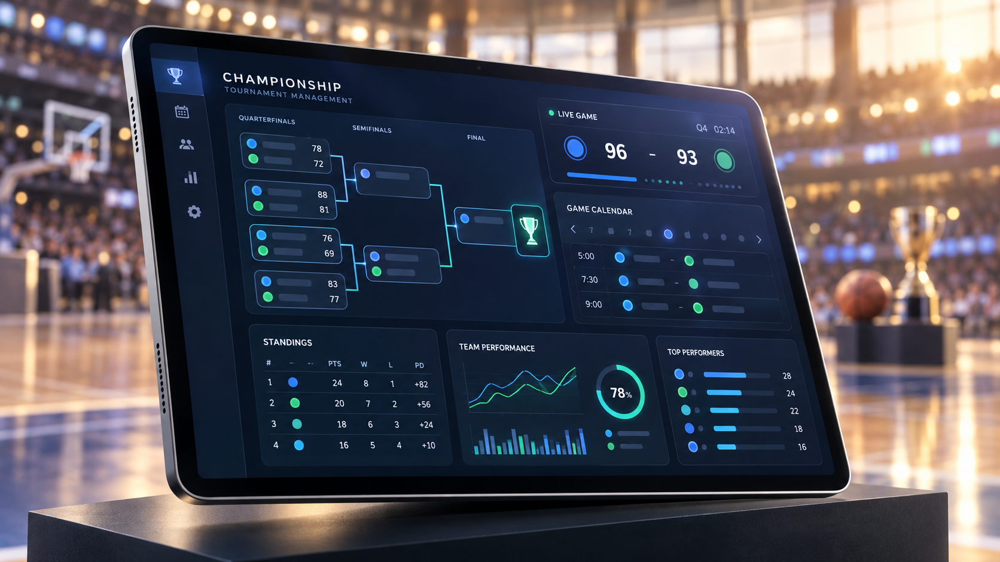
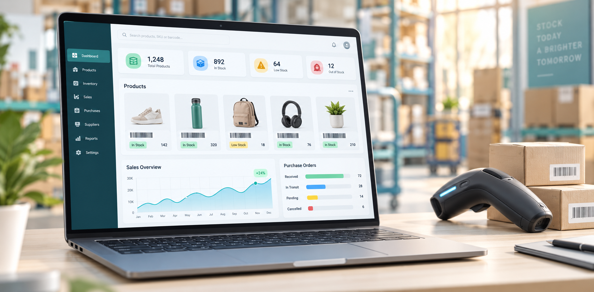
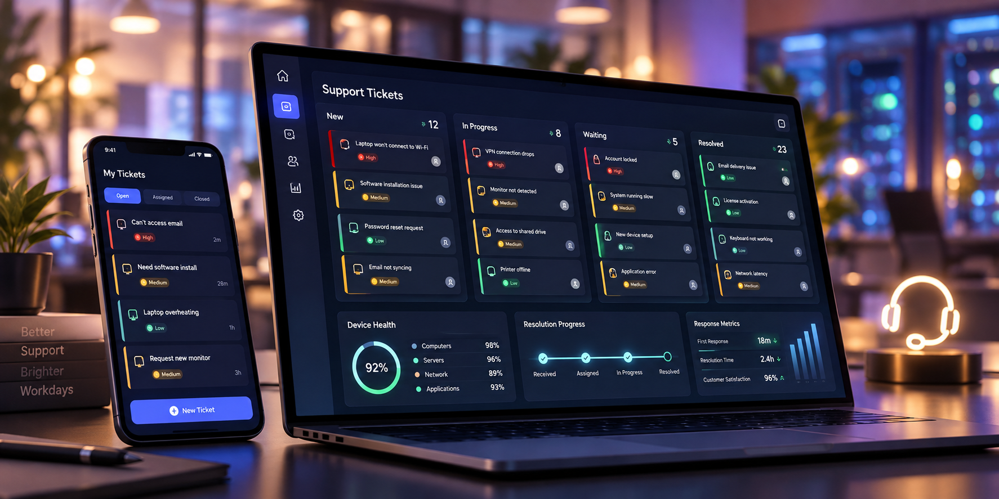

En evaluación
En evaluaciónTecnología
Audífonos con cancelación de ruido
Opciones para estudiar, trabajar y viajar con menos distracciones.
AudioTrabajo
Análisis en preparaciónVer guías
Menos ruido, mejores decisiones. Reunimos criterios prácticos, imágenes claras, guías de compra y sistemas desarrollados para que sepas qué estás eligiendo.
Explora por necesidad y abre la guía antes de decidir.
En evaluaciónOpciones para estudiar, trabajar y viajar con menos distracciones.
.png) Amazon
AmazonGiro motorizado, audio bidireccional y detección inteligente.
.png) Amazon
AmazonPotencia compacta para celular, tableta y computadora.
.png) En evaluación
En evaluaciónControl remoto y seguimiento básico del consumo de energía.
.png) En evaluación
En evaluaciónAlternativas para aprovechar espacios pequeños y mantener el orden.
.png) Guía
GuíaIluminación automática para pasillos, escaleras y armarios.
.png) Amazon
AmazonLectura básica de fallas para propietarios y pequeños talleres.
.png) Amazon
AmazonInflado de emergencia para automóvil, motocicleta o bicicleta.
.png) Amazon
AmazonRegistro de trayectos, memoria y modo estacionamiento.
.png) En evaluación
En evaluaciónPendiente, capacidad, superficie y facilidad de transporte.
.png) En evaluación
En evaluaciónComparación de materiales, estabilidad y mantenimiento.
.png) En evaluación
En evaluaciónAyuda cotidiana para recoger objetos con menor esfuerzo.
Contenido visual y directo para entender qué revisar antes de comprar.
Conoce su funcionamiento mediante demostraciones. El acceso a cada plataforma se habilita solo para usuarios autorizados.

Equipos, partidos, resultados, tablas de posiciones y estadísticas.

Productos, compras, ventas, movimientos, caja y reportes.

Registro, asignación y seguimiento de solicitudes tecnológicas.
Priorizamos criterios claros y utilidad real antes que volumen.
Revisamos compatibilidad, límites, mantenimiento, seguridad y uso previsto antes de recomendar.
Indicamos cuándo una selección incluye afiliación y distinguimos las guías de los análisis aún en preparación.
No inventamos precios, calificaciones ni garantías. La disponibilidad y las condiciones se confirman en la tienda.
Lo esencial sobre nuestras selecciones, enlaces y sistemas.
NexoSelect participa en programas de afiliación. Algunos enlaces pueden generar una comisión si realizas una compra válida, sin aumentar el precio para ti.
Las selecciones se presentan con fines informativos. Verifica siempre precio, disponibilidad, compatibilidad, condiciones de envío y políticas directamente en la tienda.